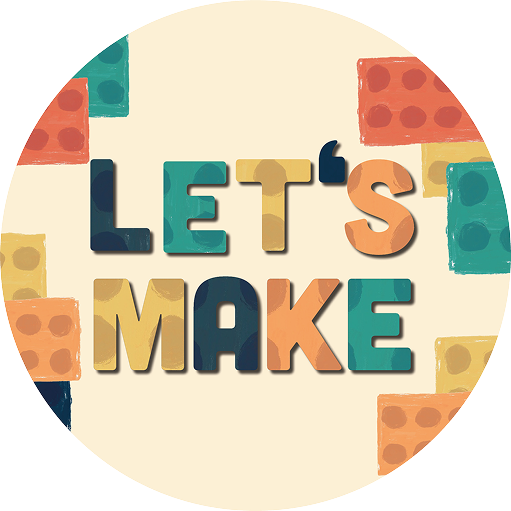
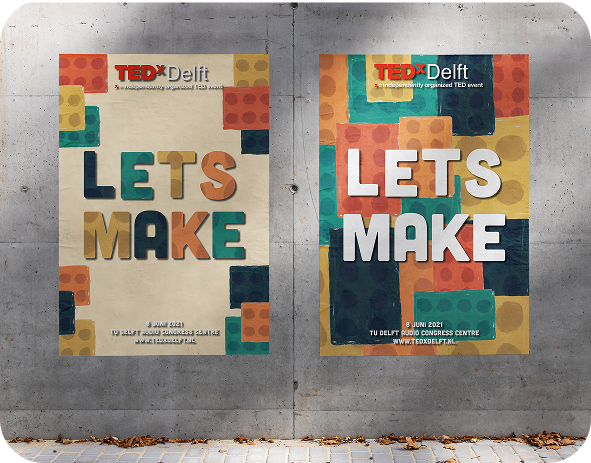
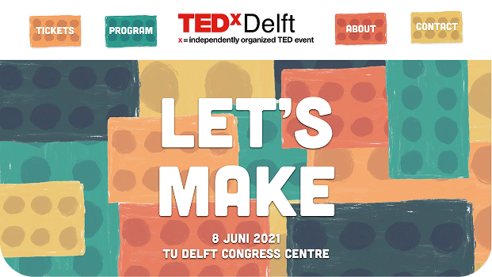
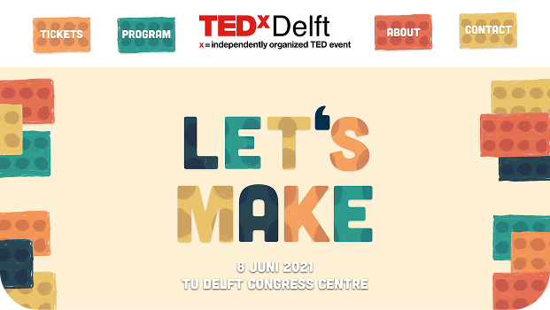
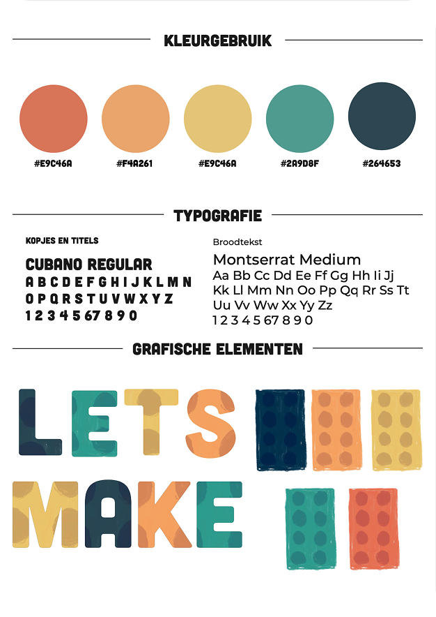

Back to projects
Back to projects
TEDx Let's MAke - graphic design
During the first year of my bachelor’s degree, I designed a dynamic visual identity for TEDx Delft’s Let’s Make event. I chose LEGO bricks as the foundation of the identity because their modular nature fit perfectly with the theme of Let's Make.
I began the design process by experimenting with real LEGO bricks to explore different compositions and ways of incorporating typography. I then translated these experiments into a more abstract visual style by creating my own illustrations of the bricks.
In the final identity, the illustrated bricks can be arranged in various compositions. This makes the design dynamic while ensuring that every application remains recognisable as part of the same visual identity.

Posters

Landingpage website


Styleguide
